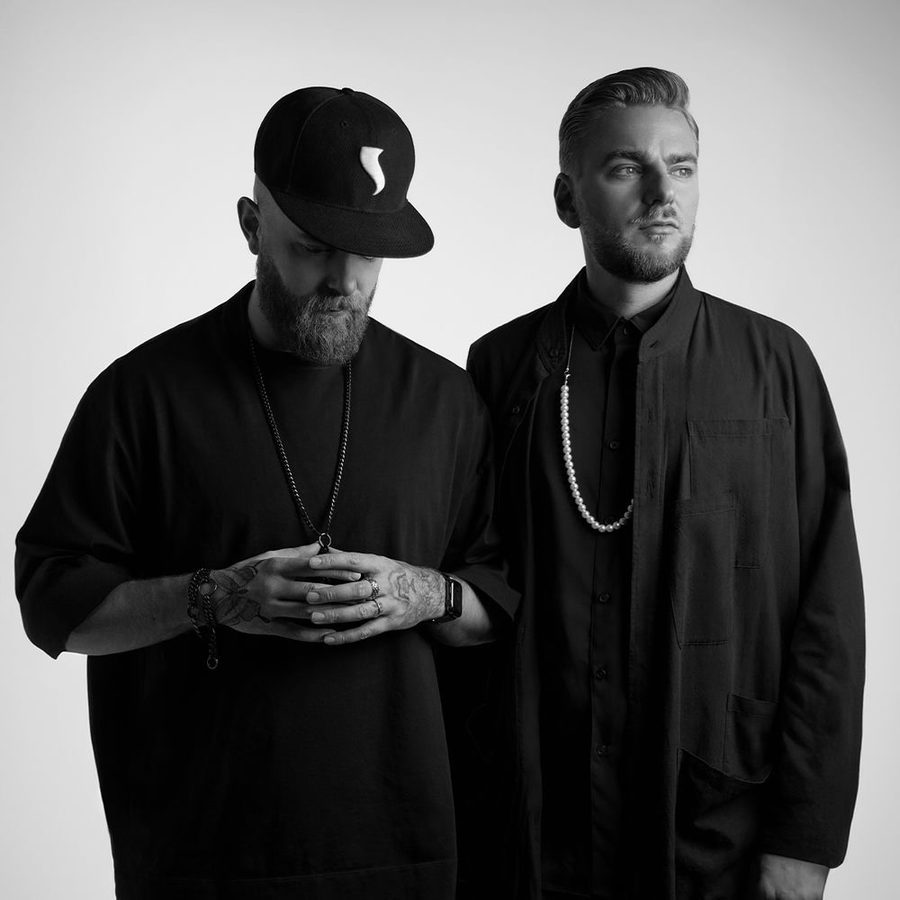

Showtek’s EDM evolution: “Oh man, we’re so glad we changed”


Showtek’s EDM evolution: “Oh man, we’re so glad we changed”
To transition from being titans of a scene as niche, but as lucrative as hardstyle, to successful mainstage EDM jocks, is no mean feat at all; but it was a feat pulled off with aplomb by Dutch brothers Sjoerd and Wouter Janssen, AKA Showtek. Not that it was ever easy.
Several years ago, Showtek were the producers behind some of the most anthemic examples of the pounding BPMs of hardstyle, as well as regularly headlining the Q-dance portfolio of events across Europe and the rest of the world; the hard dance arm of Dutch promoter ID&T, also responsible for the mega Tomorrowland and Sensation events brands. Sjoerd and Wouter were closing the mainstage of the likes of the Defqon.1 Festival, one of the world’s most spectacle-soaked events that hosts 50,000+ punters just outside of Amsterdam every year; as well as hosting their own dedicated ‘X-Qlusive’ events, among many others.
You only need to glance at the sort of events they headlined in 2013 though to see that a musical evolution has taken place. When Data Transmission chatted with the Janssen brothers at Amsterdam Dance Event (ADE) in October, it was just a few hours before they were set to play one of the week’s bigger events for lovers of mainstage EDM, a Friday night party thrown by the smiling Frenchman himself David Guetta and ‘Dirty Dutch’ renegade Chuckie.
The pair had worked behind the scenes for years as producers on mainstage electro and progressive records for the likes of Tiësto and Marcel Woods, eventually growing to feel limited by hardstyle. While still expressing love for the scene they came from, Showtek’s radio hit Cannonball late last year signaled the moment they crossed over. In this year’s DJ Mag Top 100 DJs, they re-entered the poll at the highest new position #27.
However, the initial reaction from their hardstyle fanbase was seething. Showtek opened up about how challenging the transition had been at ADE when they spoke on a panel titled How To Survive as a DJ, alongside Nicky Romero and Sharam, where they tracked their evolution from hardstyle heroes to mainstage drawcards, since coming out of the shadows as co-producers.
After the panel, Data Transmission spoke to the pair.
I’ve watched your evolution over the past two years, and I know you wanted to break free from the feeling that you were being limited or pigeonholed.
Sjoerd: “We were. It felt terrible, especially when you’re working behind the scenes with names like Tiesto and Chris Brown and Marcel Woods, all that music and nobody can see what you’re actually capable of, and what you can do.
So you used to do a lot of work behind the scenes?
Wouter: “We used to. Now we’re fully focused on Showtek, but we’ve made progressive music for ten years, and we ended up falling in love with it even more than with the hard stuff. So why cheat on ourselves and go onstage just for the money? It doesn’t make sense. Maybe people think we crossed for the money, but we would have been selling out if we had kept doing something that we weren’t happy with anymore”.
Sjoerd: “I think we reinvented our sound, and it really gave our career a new boost. I’m not saying we were extremely bored with doing hard dance, no way. But we knew there was going to come a time when we were going to feel limited, and our music desires couldn’t be expressed through that genre. If you do other music, you evolve very quick, and we fell in love. It was like cheating on your girlfriend. That was what that music was like to us.
We made a track with Tiesto called Maximal Crazy, and we coproduced it with him, and he invited us to go and stay with him in Las Vegas during Electric Daisy Carnival. He played that tune, and we saw 160,000 people going off. And we looked at each other, and thought, this is going to be us in three years, this is going to be our music as well, we love this”.
Wouter: “There was that new electro-progressive sound coming in, and we were part of it
Sjoerd: “We had our transition year, which wasn’t easy because there were a lot of fans who didn’t want to see Showtek change. But you’re always better to lose some fans, I think… A lot of our fans, we still have them, because we didn’t lose the Showtek sound. It’s stll there, it’s just a different energy. Even higher I think. And then we gained a lot of new fans, which makes it also interesting because when you come to new areas”.
Wouter: “Oh man, we’re so glad we changed. The first year was really hard… people were throwing beer at shows and booing.
Continued on page 2